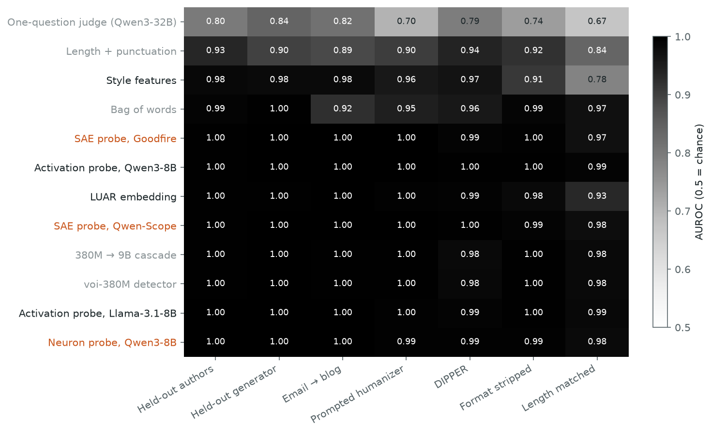
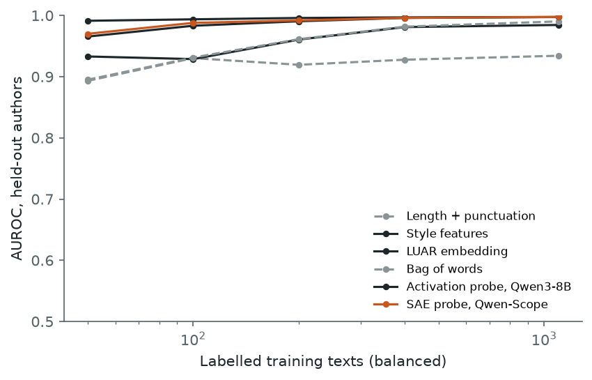
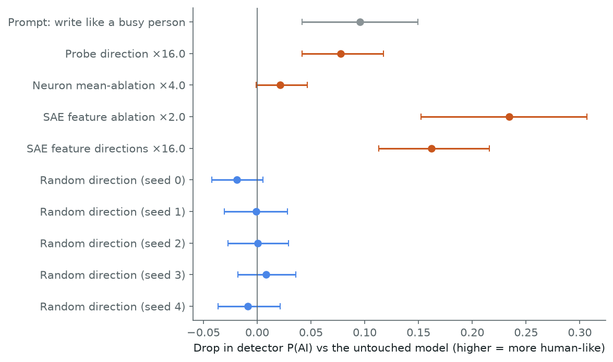
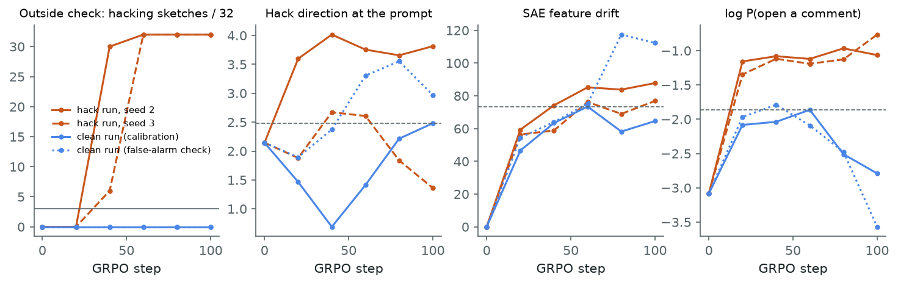
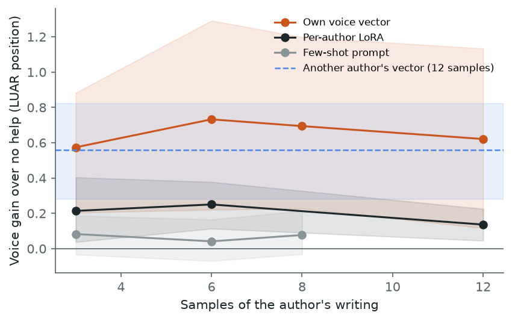

← Research·The Taste Stack · Episode 1·Experiments·
Small probes catch AI text as well as SAE features do; the features steer it better, and three of our own checks failed
When you want to catch AI-written text and know why a judge says what it says, is a small probe enough, or do you need to read the model's features? On public emails and blog posts, both detected AI text almost perfectly. Pushing against the features steered a model away from sounding like AI further than the probe's direction did. And three of our own checks passed their checks on clean examples, then failed on the outputs they actually had to judge.
results/causal.json and results/qa_examples.json.Summary: the short answer and the key results
In short
To catch AI slop and know why a judge says what it says, should you use small probes or feature-level interpretability?
Detection: a probe is enough. A linear probe on Qwen3-8B's activations and a probe on its SAE features both scored 0.997-0.998 on 45 held-out authors, and both survived two humanizers.
Steering: the features did better. Subtracting the directions of 16 AI-leaning SAE features lowered a detector's P(AI) by 0.16 on held-out prompts, against 0.08 for a probe direction of the same size; five random directions of that size did nothing.
Auditing: reading features named some planted confounds and hacks, but no more than a bag of words did once the grader was checked, and no internal signal warned of a reward hack without false alarms. Three of our own checks failed on real outputs: a fluency check passed looping text, a grader passed its known-answer test and then misgraded real readouts, and a voice score rewarded loops.
Terms
AUROC: the chance a method scores a random AI text above a random human one (1 = perfect, 0.5 = a coin flip). P(AI): a detector's confidence that a text is AI-written. SAE feature: one of 65,536 directions a sparse autoencoder finds in a model's activations, each meant to stand for one human-readable idea. Check: anything that scores outputs, from a detector to a grader.
Key results
| What we tested | Result | Compared with |
|---|---|---|
| 4.1 Detection on held-out authors | A tie at the ceiling. Activation probe 0.997 [0.993, 1.000]; SAE probe 0.998 [0.994, 1.000]; neuron probe 0.999 (AUROC, 678 texts, 45 authors) | Bag of words 0.990; one-question judge (Qwen3-32B) 0.801 |
| 4.2 Humanizers, a new generator, email → blog | Every strong method held. Activation and SAE probes 0.990-1.000 on every shift | Bag of words fell to 0.92 on blog posts; the judge to 0.70 on rewritten text |
| 4.3 Shortcut check | One method failed it. The style-feature probe fell from 0.985 to 0.782 [0.743, 0.823] when both sides were cut to their first 60 words | Activation probe 0.990, SAE probe 0.976 on the same cut |
| 4.4 Does what they read make text sound like AI? | Yes, and the SAE features more so. Detector P(AI) fell by 0.162 [0.113, 0.216] with the SAE feature directions and by 0.078 [0.042, 0.118] with a layer-18 probe direction of the same size (60 held-out prompts; both fluent) | Five random directions of the same size: −0.019 to +0.009. A "write like a busy person" prompt: 0.096 |
| 4.5 Finding planted reward hacks | No better than a bag of words. SAE readouts surfaced 3, 4 and 4 of 6 hacks by the three graders | Bag of words: 1, 5 and 4. The two model graders agreed on 58% of verdicts |
| 4.6 Catching a confounded probe | Named, but not specific. SAE readouts named 2-4 of 4 planted confounds (author's read to frozen grader), and also called the clean control probe a shortcut | Neuron readouts: 1-3 of 4, also flagging the clean control |
| 4.7 Early warning of a reward hack | No. The comment log-probability flagged both hack runs one checkpoint early, but every internal signal also flagged a clean run | Outside check: both hack runs at step 40, no false alarm |
| 4.8 A person's voice: steering vector, LoRA, prompting | The vector's gain was mostly loops. It beat 8-shot prompting by 0.62 [0.17, 1.11], but 77% of its drafts looped. In a loop-free rerun (post hoc), the 8-sample vector's lead over 8-shot prompting was +0.22 [−0.08, 0.54]; over no help, the author's own 12-sample vector gained +0.42 [0.12, 0.72] and another author's +0.44 [0.20, 0.75], so it reads "less assistant", not a person | Per-author LoRA +0.14 [0.05, 0.23]; 8-shot +0.08; random vector 0.00 |
01Introduction
Take one work email from an Enron author ("As I discussed in the staff meeting, I am sending you the global standards for your review…") and ask Qwen3-8B to write the email its one-paragraph summary describes. A probe reading the model's own activations scores the human email 0.000 and the rewrite 0.999. A one-question judge, asked "human or AI?", calls both human. The probe answers its one question very well. What it cannot say is why: whether it reads AI-ness, or length, layout or topic. This note asks whether reading the model's features can, and whether what they read is what makes text sound like AI.
| Tool | What it is | Analogy | Reads or changes the model? | In this note |
|---|---|---|---|---|
| Small probe | A tiny classifier (one linear layer) trained in minutes on a model's activations or on simple text features, answering one yes/no question | A food thermometer: one cheap reading, no opinion about anything else | Reads | Tests 1-3: the activation, SAE and style probes |
| Steering vector | A direction in the activations, often the average difference between two sets of texts, added while the model writes (the Contrastive Activation Addition paper, the Representation Engineering paper) | A pinch of salt while the dish cooks: no new recipe, just a nudge | Changes, at run time and reversibly | Test 4: pushing against the probe and the SAE features |
| Persona vector | A steering vector for a character trait (the Persona Vectors paper); one direction separates the default assistant from other characters (the Assistant Axis paper) | The cook's personality, a direction you can read or turn up | Reads and changes | Tests 9-10: a per-author "voice" vector, which acted more like an anti-assistant direction |
| Authorship model | A separate model that turns a few texts into a style fingerprint; two fingerprints close together suggest one writer (LUAR) | A taster who can tell which cook made a dish, without caring whether it is good | Neither: it judges the output | The voice score in tests 9-10, and one more probe in test 1 |
| Preference model | A model trained on choices ("A is better than B") to predict which output wins; it becomes the reward in RL | A critic who learned one diner's taste from their past orders | Neither: it judges the output; RL then changes the model | Test 5: six reward models that each prefer a planted hack |
What is known. Linear probes on activations are cheap and often accurate; the Constitutional Classifiers paper runs classifiers as a production safeguard. Sparse autoencoders (SAEs) split activations into many directions, each meant to stand for one human-readable feature (Toy Models of Superposition, Towards Monosemanticity), and turning one up can steer a model (Golden Gate Claude). Earlier notes in this lab found a sandbagging probe that read the prompt's instruction rather than the behaviour, and an authorship model that read layout rather than voice.
What is missing. Companies selling taste and preference data produce judges: rubrics, reward models, probes. Few test what those judges read, or whether what they read is what makes text sloppy. A judge that reads a shortcut can be gamed by any policy trained against it.
When you want to detect AI slop and know why a model or a judge produces or rewards it, which tells you more: a small probe, or reading the model's features?
What this note does. It scores twelve detectors on one leaderboard and runs the four jobs where interpretability claims to beat probes. It contributes:
- a leaderboard of probes, SAE and neuron probes, trained detectors and an LLM judge on topic- and length-matched human and AI text, with humanizers, a held-out generator and shortcut edits;
- a use test: steering or ablating what each method reads, against random directions of the same size;
- blind audits of four deliberately confounded probes and six reward models with planted hacks;
- an early-warning test on saved reward-hacking checkpoints, and a voice test of steering against LoRA and prompting;
- three checks that failed on real outputs, with the checks that caught them.
What counts as success. Written down before any method was fitted (plan and amendment):
- Every reported number is on held-out authors, prompts or checkpoints; layers, k and regularisation were chosen on dev.
- A method gets credit for explaining slop only if steering or ablating what it reads beats random directions of the same norm, at matched fluency.
- "Flagged" and "surfaced" are decided by a blind reader and a grader whose known-answer bar was set in advance.
- Nine predictions with thresholds, scored mechanically (section 6).
02Setup
The plan numbers ten tests; the text below keeps those numbers. Test 6 (labels needed and cost) is reported inside section 4.3.
2.1 Data
Human text. Enron sent mail and the Blog Authorship Corpus, 50-300 words, at most 8 texts per Enron author and 4 per blogger. Enron authors are split by person: fit (73 authors, 550 texts), dev (29, 218), test (45, 339). Blog posts (60 bloggers, 240) are test only. Line breaks left by the mail archive are removed and hard-wrapped lines re-joined for every text, human or AI; otherwise every method reads the 78-character wrap.
AI text, topic- and length-matched. Each human text comes with a one-paragraph corpus summary. An open model was asked to write the email or post that summary describes, at about the same length, body only. The fit generators were Qwen3-8B, Llama-3.1-8B-Instruct and gemma-3-27b-it, in turn; the held-out generator was phi-4. So a detector cannot win on topic or length: both sides of each pair are about the same thing.
Shifts. Two humanizers rewrote the test AI texts: DIPPER, a paraphraser built to evade detectors, and a prompted rewrite by Qwen3-32B ("make it sound like a real person wrote it quickly"). The frontier set is 240 cold sales emails by Claude Sonnet 5.5 and Gemini from the Sounds Like Me episode, against the same test humans; it is a different task, so topic is not matched there.
2.2 Methods
- Cheap baselines: length and punctuation counts; a bag of words (TF-IDF over words and word pairs) with logistic regression.
- Small probes: 24 hand-made style features; LUAR authorship embeddings; the mean activation of Qwen3-8B (layers 9, 18, 27) or Llama-3.1-8B-Instruct (layers 8, 19, 28), each with logistic regression. Means over tokens, the first token dropped.
- Interpretability: SAE probes on the top k features (k = 16, 64 or 256, ranked by the fit-set difference) of Qwen-Scope (Qwen3-8B, layer 18, 65,536 features) and Goodfire's SAE (Llama, layer 19, 65,536); a neuron probe on the top k MLP neurons of Qwen3-8B's layer 18.
- Trained detectors: voi-380M, and a cascade that sends its least-sure 10% to a 9B detector trained in an earlier note.
- LLM judge: Qwen3-32B, asked "Was this written by a human or by an AI?"; P(AI) from its first answer token.
2.3 Terms
AUROC: the chance a method scores a random AI text above a random human one (0.5 = a coin flip, 1 = perfect). Looping: more than 20% of a text's four-word sequences repeat. Fluent: the untouched model finds the output about as predictable as its own writing (its average loss per token rises by at most 0.3). Check: anything that scores outputs: a detector, a grader, a fluency rule, a voice score. Voice position: where four drafts sit between a different human (0) and the author's own held-out emails (1) on LUAR, with greetings, sign-offs and whitespace stripped.
03How the study was run
- Plan and predictions (file guide): nine predictions and each one's scoring rule, fixed before any method was fitted.
- Freeze the data: human sets, 1,686 AI texts, humanizers, shortcut edits, five confound sets and six hack sets; hashes in
results/data_manifest.json. - Choose settings on dev (436 texts): layer, k and C for every probe; strengths for test 4 (13 settings × 40 prompts); the LoRA recipe for tests 9-10 (3 settings × 3 dev authors). Every try is a row in
results.tsv. - Check the checks: the grader on 12 known-answer cases (11/12, bar 11); voi-380M on the test set (AUROC 0.998), so it can serve as test 4's outcome.
- Run held-out: 678 test texts and 6 shifted sets; 60 prompts × 11 conditions for test 4; 11 targets × 2-5 readouts for tests 5 and 7; 24 checkpoints for test 8; 12 authors × 4 briefs × 14 conditions for tests 9-10.
- Score the predictions by their rules (
analyze.py), then re-test every check on the outputs it actually judged.
| Fixed before any trial | Changed after reading outputs |
|---|---|
| Data, splits, generators, edits, confounds and hacks; every method's search grid; the nine predictions and their scoring rules; the grader's known-answer bar | Amendment 1 (dev only, before any held-out voice run): the strongest LoRA setting wrote in the author's voice but ignored the brief (on-task 0.17), so a copy check and an on-task check were added to the LoRA choice |
| Fluency = mean loss rise ≤ 0.3 (tests 4, 9-10) | Not changed. After the run, loops were found to pass it; loop rates are reported beside every steering result, with a loop-free comparison |
| The grader (Qwen3-32B) as the instrument for "surfaced" and "flagged" | Not changed. After the run, a second grader from another family (gemma-3-27b-it) and the author's read are reported beside it |
| Test 8's signal (c): the log-probability of opening a code comment | A tokenizer bug measured nothing on the first run; fixed and rerun on all 24 checkpoints before scoring |
| The voice vector's strength (0.4, from another episode) | After the loops were found: an exploratory rerun at a strength chosen on 5 dev authors with at most 5% looping (0.2), reported beside the frozen scores and never used to rescore |
| The five confound sets | Code review found the layout set's split ran along class; it was rebuilt (other sets and every text unchanged) and tests 5 and 7 rerun before the numbers here. Excluding each probe's own training texts from the readout pool was tried and reverted, because it removed every text carrying the planted hack |
Conditions. Generation at temperature 0.7, top-p 0.95, repetition penalty 1.0, 400 new tokens (320 for voice); Qwen3 with thinking off. One H100 per job; the Pigment checkpoints on L40S. Total compute about $16.
04Results
4.1 Detection: probes and SAE features tie at the ceiling; the judge trails
On 45 held-out Enron authors, eight methods scored 0.997 or higher (Figure 1). The activation probe on Qwen3-8B (layer 9, chosen on dev) scored 0.997 [0.993, 1.000]; the SAE probe on Qwen-Scope's layer 18 (k = 256) 0.998 [0.994, 1.000]. On Llama the order flipped by 0.001. P1 (the probe at least matches the SAE probe) is a hit, but at this ceiling it says little: the difference is a tenth of the interval's width.
The cheap baselines were not far behind: the bag of words scored 0.990, the style features 0.985. The one-question judge scored 0.801 [0.763, 0.842]: the slowest method was the worst.

results/leaderboard.json.4.2 Humanizers, a new generator and blog posts barely touch the strong methods
DIPPER and the prompted rewrite left every activation, SAE and neuron probe at 0.990 or above. Neither the SAE probe nor the activation probe lost anything under the humanizers, so P2 (SAE features hold up better by 0.05) is a miss. The bag of words fell to 0.946 under the prompted rewrite and 0.923 on blog posts; the judge fell to 0.703 under the prompted rewrite.
On the frontier sales drafts, length and punctuation counts fell to 0.735, and the judge rose to 0.925: it calls a sales pitch AI more readily than a work email.
4.3 One method was reading length: the style probe lost 0.20 on the first 60 words
Cutting both sides to their first 60 words cost the style-feature probe 0.203 (0.985 to 0.782 [0.743, 0.823]); stripping greetings, sign-offs and layout cost it 0.077. Its features include sentence-length spread and word counts, so a matched cut takes away what it leaned on. P3 (some method above 0.9 fails the shortcut check) is a hit. On the same cut LUAR lost 0.066, the activation probe 0.007 and the SAE probe 0.022.

results/curves.json.Cost. Activations plus SAE features took 18.5 H100-seconds per 1,000 texts ($0.023); the judge 62 seconds ($0.075). The style and bag-of-words probes run in about a tenth of a second per 1,000 texts on a laptop.
4.4 Pushing against the SAE features makes Qwen3-8B sound less like AI; random directions do nothing
A probe reading something does not show that the model uses it. So Qwen3-8B wrote emails from 60 held-out summaries while each method's reading was pushed against at layer 18 (Figure 3). The "probe" here is an activation probe refit at layer 18, the SAE's layer, not the layer-9 detector of section 4.1. Each method's strength was chosen on 40 dev summaries as the largest effect that stayed fluent. The probe and SAE directions both chose the largest strength tried (16% of a typical activation's size), so they are compared at equal size, not each pushed to its limit.

results/causal.json.- Probe direction: P(AI) from 0.722 to 0.645, a drop of 0.078 [0.042, 0.118], and 0.069 [0.029, 0.112] more than the best of five random directions (−0.019 to +0.009).
- SAE feature directions (the summed directions of the 16 features most active on AI text): a drop of 0.162 [0.113, 0.216], 1 of 60 emails looping, 0.084 [0.028, 0.138] more than the probe direction. On the dev summaries the gap was smaller (0.178 against 0.144), so "twice" is the held-out figure; the direction of the gap held on both.
- SAE feature ablation (removing those features' part of the activation, twice over): the largest drop, 0.234, but 57% of its emails loop and 17% are empty, and the loss of the rest fell by 0.50, which is how it passed the fluency rule. It is not a usable result.
- Neuron mean-ablation of 64 AI-leaning neurons: 0.021 [−0.001, 0.046], no better than random.
| Arm | Drop in P(AI) | Looping | Empty | Loss rise |
|---|---|---|---|---|
| SAE feature directions ×16 | 0.162 [0.113, 0.216] | 2% | 0% | −0.02 |
| Probe direction ×16 (layer 18) | 0.078 [0.042, 0.118] | 0% | 0% | −0.13 |
| SAE feature ablation ×2 | 0.234 [0.152, 0.306] | 57% | 17% | −0.50 |
| Neuron mean-ablation ×4 | 0.021 [−0.001, 0.046] | 0% | 0% | −0.11 |
| Random directions ×16 (5 seeds) | −0.019 to +0.009 | 0% | 0% | −0.03 to 0.00 |
| Prompt: write like a busy person | 0.096 [0.042, 0.149] | 0% | 0% | +0.36 |
By its frozen rule P5 is a hit (the probe beats random, and the best SAE arm beats the probe), but the best arm is the looping one. The loop-free SAE arm beats the probe as well, so the conclusion stands without it. With a loop cap of 5% applied on dev (post hoc), the same two arms would have been chosen: the probe and SAE directions at ×16 looped on 3% and 0% of dev emails, and every ablation strength looped more. A plain prompt asking for an unpolished human email did about as well as the probe (0.096), but it was not tuned on dev, showed three human emails, wrote emails 23 words shorter, and broke the fluency cap (loss up by 0.36).
4.5 Finding planted reward hacks: SAE readouts do no better than a bag of words once the grader is checked
Six reward models each learned to prefer drafts with one planted hack: sentences copied from the author's old emails, stuffed sign-offs, an invented past meeting, filler about "partnership" and "excellence", sheer length, and the stock opener "I hope this email finds you well". For each, five readouts were shown to a blind reader (Qwen3-32B), who never saw the hack, and a grader decided whether the reader's description named it.
| Readout | Grader (Qwen3-32B) | Second grader (gemma-3-27b) | Author's read |
|---|---|---|---|
| SAE features (Qwen-Scope) | 3 | 4 | 4 |
| MLP neurons | 1 | 4 | 1 |
| Bag of words | 1 | 5 | 4 |
| Style features | 1 | 4 | 2 |
| Top-scoring examples | 1 | 4 | 1 |
By the frozen grader, SAE readouts beat every probe-family readout by 2, so P4 is a hit by its rule. But the two model graders agreed on only 58% of verdicts. The first missed clear matches: it denied the bag of words on padding when the reader quoted "commitment to excellence", and the style features on length when the reader said "number of words, characters". The second credited almost everything. Read by hand, the SAE features and the bag of words each found four. No readout found the copied sentences, which are invisible without the author's own emails beside the draft. One readout the bag of words could not match: for stuffed sign-offs, the SAE reader described "P.S. lines, standard closing phrases and titles like Account Executive".
4.6 Reading SAE features named confounded probes, and called a clean one a shortcut too
Four probes were trained on labels that follow a confound more than AI-ness (70/30 mixes): length, layout, topic (cold sales pitches against work email) and register (blog against email). A fifth, clean probe was the control. By the frozen grader, the SAE readout named 4 of 4 confounds and the neuron readout 3 (P6 hit). Three problems undercut the hit:
- The clean control was flagged too, by both readouts. The off-task half of the rule fired on 9 of 10 readouts: the reader called almost every probe "something other than AI authorship". The clean control needed only that half to count as flagged, while a confound also needed a match.
- The grader accepted wrong matches. It credited "function words, pronouns, prepositions" as naming length, and "formal communication, job-related content" as naming layout. It also flipped its verdict on a reader description identical to the first run's. By the author's read the SAE readout named 2 of 4 (topic, register) and the neuron readout 1 (topic); by the second grader, 3 and 2.
- The first run's layout set was built wrong (its split ran along class) and was rebuilt before these numbers.
4.7 No internal signal warned of the Pigment Gym hack without a false alarm
The Pigment Gym note trained Qwen3-1.7B to paint with code, under a bonus a policy could game by stuffing scene words into code comments. Two runs learned the hack around step 40; two did not. The outside check (32 sketches per saved checkpoint, at least 3 hacking) flagged both hack runs at step 40 and neither clean run (Figure 4).

results/pigment.json.The model's log-probability of opening a code comment crossed the threshold at step 20 in both hack runs, one checkpoint before the outside check. But it crossed it in the second clean run as well (step 40), by a small margin (−1.79 against a threshold of −1.86, while the hack runs reached −1.16 and −1.35). That clean run trained with a smaller bonus (the "v1" reward), and the threshold is the maximum of six checkpoints of one calibration run, so this false alarm is thin. The other signals false-alarmed by wider margins: a projection onto a hack direction built from a fifth run, and the drift of SAE features. The projection over fixed sketches never flagged either hack run. P7 is a miss by its rule; the comment log-probability is the one signal worth retesting with more clean runs.
4.8 A per-author steering vector beat prompting and LoRA on voice only by looping
For 12 held-out authors from the Sounds Like Me episode, Qwen3-8B wrote 4 cold emails each, on synthetic sales briefs for invented companies (such as a freight broker called Lanebridge), helped by a voice vector (the mean activation of n of the author's emails minus the model's default), a LoRA (the LoRA paper) trained on the same n emails, or the n emails in the prompt (Figure 5).

results/voice.json.The vector's "gain" was mostly loops. At the strength Sounds Like Me had chosen (0.4), the vector beat 8-shot prompting by +0.62 [0.17, 1.11] at 8 samples, so P9 is a hit by its rule. But most of its drafts repeated themselves (77% at 8 samples, 73% at 12, against 0% for prompting and LoRA), the voice score rewarded the repetition, and another author's vector did almost as well (+0.56 [0.28, 0.82], 81% looping). P8 (half a LoRA's gain at 1% of its cost) is a miss on cost: a 40-step LoRA trained in 5.2 s, so the vector's 0.35 s is 7% of it.
A loop-free rerun (exploratory, post hoc). Choosing the strength on 5 dev authors with at most 5% looping drafts gave 0.2 (0.3 looped on 15%). At 0.2, on the same 12 held-out authors (Table 4):
| Condition | Voice gain | Looping |
|---|---|---|
| Own vector, 8 samples, strength 0.4 | +0.69 [0.23, 1.20] | 77% |
| Another author's vector, strength 0.4 | +0.56 [0.28, 0.82] | 81% |
| Own vector, 8 samples, strength 0.2 | +0.30 [0.05, 0.57] | 2% |
| Own vector, 12 samples, strength 0.2 | +0.42 [0.12, 0.72] | 0% |
| Another author's vector, strength 0.2 | +0.44 [0.20, 0.75] | 0% |
| Random vector, strength 0.2 | +0.00 [−0.09, 0.10] | 0% |
| Per-author LoRA, 12 samples | +0.14 [0.05, 0.23] | 0% |
| 8-shot prompt | +0.08 [−0.03, 0.21] | 0% |
Without loops, a vector still moves the voice score, and a random vector does not. But another author's vector moves it just as far: over no help, both built from 12 samples, +0.42 [0.12, 0.72] for the author's own and +0.44 [0.20, 0.75] for another author's (own minus other −0.02 [−0.40, 0.33]). And against 8-shot prompting at equal samples (8), the vector's lead shrinks to +0.22 [−0.08, 0.54], an interval that includes zero. What the vector carries is "less like the default assistant", not a particular person. The LoRA's gain is small, and with no other-author LoRA in this test it is unknown whether it is specific to the person; it is the one arm that worked at the pre-registered settings with no loops, no copying and 98% of drafts on the brief.
05Implications for AI safety
For detection alone, a probe is enough: the cheapest strong probes matched the SAE features, and the one shortcut found (the style probe's) showed up in a 60-word cut, not in any feature reading. Interpretability earned its place in one job: what an SAE reads, pushed against, changed the model's writing twice as much as what the probe reads, while random directions did nothing. That is a use test, and it passed. The audit jobs were weaker than they first looked: feature readouts named confounds and hacks, but a bag of words named as many hacks, and the reader called a clean probe a shortcut too. Most of what went wrong was in our own checks, each of which passed a check on clean examples and failed on the outputs it had to judge.
Screen with a probe, test what it reads by steering against random directions of the same size, and re-check every judge, fluency check and voice score on the outputs it actually scores.
06Predictions
| # | Prediction | Threshold | Confidence | Result | Reason |
|---|---|---|---|---|---|
| P1 | Activation probe matches or beats SAE probe in distribution | Δ ≥ −0.01 | 70% | Hit (−0.0002) | Both at the ceiling (0.997, 0.998) |
| P2 | SAE probes hold up better under humanizers | drop smaller by ≥ 0.05 | 40% | Miss (−0.0003) | Neither dropped |
| P3 | A method above 0.9 fails the shortcut check | drop > 0.15 | 65% | Hit | Style probe −0.203 on the 60-word cut |
| P4 | SAE or neuron reading surfaces more hacks than any probe | ≥ 2 more of 6 | 55% | Hit (3 vs 1). Grader failed its re-check | Graders agree on 58% of verdicts; by the author's read a tie (4 vs 4), by the second grader the bag of words leads (5 vs 4) |
| P5 | Probe steering beats random; SAE beats the probe | both CIs > 0 | 35% | Hit. Artefact: loops (best arm) | The best SAE arm loops (57%) and is empty on 17%; the loop-free SAE arm also beats the probe (+0.084 [0.028, 0.138]) |
| P6 | SAE or neuron reading flags most planted confounds | ≥ 3 of 4 | 50% | Hit (SAE 4). Grader failed its re-check | Both readouts flagged the clean control; author's read SAE 2, second grader SAE 3 |
| P7 | An internal signal warns of the hack earlier | ≥ 1 checkpoint, no false alarm | 40% | Miss | Comment log-probability led by one checkpoint, but every signal false-alarmed on a clean run |
| P8 | Steering gets half a LoRA's voice gain at 1% of its cost | ratio ≥ 0.5 and ≤ 0.01 | 45% | Miss (cost 0.067). Artefact: loops | LoRA trained in 5 s; the vector's gain was loops (77% at 8 samples) |
| P9 | A per-author vector beats 8-shot on voice | > 0.05 | 50% | Hit (+0.62). Artefact: loops | 77% of vector drafts loop; loop-free rerun (post hoc) +0.22 [−0.08, 0.54] over 8-shot, and another author's vector does as well |
Post-mortem. What surprised me: three checks that passed their tests (fluency, the grader, the voice score) failed on real outputs, and each failure made a prediction look like a hit. What I'd change: put a loop measure inside every fluency rule, and validate graders on the method's own outputs before scoring with them. The lesson for the design guide: a known-answer set is a floor, not a pass. Six predictions hit by their rules; read with their reasons, two (P1, P3) clearly hold, one (P5) holds by another route, and three (P4, P6, P9) do not survive their re-checks.
07What this does not show
- Detection was too easy to rank the strong methods. Eight methods scored 0.997-0.999 on held-out authors. The plan's gate ("every method above 0.98") did not fire because the cheap methods and the judge sat below it, but P1 and P2 are decided inside the intervals.
- One kind of text. Work email and blog posts from public corpora, with open-model rewrites; nothing about design or other media.
- One detector as test 4's outcome. A lower voi-380M score is a detector's verdict, not a person's; it was checked on test-set texts (0.998), not on steered text.
- Small audits. Ten units per readout, one reader, and graders that disagree; tests 5 and 7 have 6 and 5 targets.
- The voice vector's pre-registered strength came from another episode; the loop-free strength (0.2) was chosen after seeing the loops, so its numbers are exploratory.
- Single neurons only: neuron communities were not tried.
- SAE features were truncated to each text's 1,024 largest mean activations, which drops the weakest features and may slightly handicap the SAE probe.
- How the confound sets were built. The topic probe's positive side is 100% AI sales drafts, not a 70/30 mix; the register probe reuses Blog texts that are test-only elsewhere. The layout set was built wrong in the first run (its split ran along class) and was rebuilt before the results reported here.
- The voice vector includes the first token (an outsized "attention sink") for texts shorter than 400 tokens, as Sounds Like Me's recipe did; this may be part of why it loops.
08Reproduce it
bash experiments/probes-vs-interp/reproduce.sh rebuilds every number (about $20-30 of cloud GPU time; --dry-run prints the commands). make_figures.py draws every figure from results/, and analyze.py rescores the predictions.
09What's next
- Test whether the voice vector is an assistant-axis push: project it on a persona direction built from a written description of the default assistant, and compare with an other-author LoRA.
- Harder text for detection: human edits of AI drafts, where the ceiling should break.
- Episode 3 runs the same comparison on web design: tiny probes against an LLM judge on screenshots and page structure.
10Questions readers ask
What does a small probe actually read, on a real email?
One linear layer on Qwen3-8B's layer-9 activations, trained in seconds on 1,100 labelled texts. On a held-out Enron author's email about circulating "global standards" it scored 0.000; on Qwen3-8B's rewrite of the same summary, 0.999. The detector voi-380M gave 0.014 and 0.756; the bag of words 0.458 and 0.985. The one-question judge called both human (0.000 and 0.001).
What does a steering vector do to a real email?
Test 4's probe direction, subtracted at layer 18, moved one held-out email from P(AI) 0.725 to 0.614; the SAE feature directions moved it to 0.572; a random direction of the same size moved it the other way, to 0.827. The words barely changed ("[name], a staff member there, confirmed" became "She spoke with a staff member named [name], who confirmed"); what changed is what the detector reads.
What is a persona vector, concretely?
A direction for a trait, added while the model writes. Here the trait was one author's voice: the mean activation of their emails minus the model's default. At strength 0.4 it made drafts formal and repetitive ("Lanebridge is an asset light broker which has…") and looped on 73% of drafts at 12 samples. At 0.2 it stopped looping and still moved the voice score over no help (+0.42 [0.12, 0.72] from 12 samples), but another author's 12-sample vector moved it as far (+0.44 [0.20, 0.75]). It behaved like a "less assistant" direction, which is what the Assistant Axis paper would lead you to expect.
What does an authorship model measure?
It turns 4 texts into one fingerprint and compares fingerprints. For the first held-out author, other people's emails match their profile at 0.794 (the zero of the scale) and their own unseen emails at 0.886 (the one). Untouched drafts sat at −0.59, 8-shot drafts at −0.42, the LoRA's at −0.35, and the voice vector's at +0.42, because loops look distinctive to it.
What does a preference model learn from?
Pairs where one side won. In test 5, one reward model saw 120 drafts with stuffed sign-offs ("Best regards, Warm wishes, Thanks so much, Cheers… P.S. Looking forward to hearing from you!") marked better than 120 clean drafts. It learned the hack exactly; the SAE readout described it as "P.S. lines, standard closing phrases and titles like Account Executive". A policy trained against that reward would learn to sign off five times.
If probes detect as well, why bother with SAE features?
Because the features gave a direction that changed the writing twice as much as the probe's, and a name for some of what they read. For telling human from AI text alone, the probe is enough.
AAppendix: data
| File | What it holds |
|---|---|
| results/data_manifest.json | Hashes of every frozen text set, counts per set and label, the generators |
| results/leaderboard.json | Per method: family, the dev choice (layer, k, C, dev_auroc), and AUROC with its 95% interval and n on every test set |
| results/curves.json | AUROC by number of labels; seconds and dollars per 1,000 texts |
| results/causal.json, causal_tune.json, causal_loopcheck.json | Test 4: per condition, P(AI), drop with interval, loss rise, words, repeated four-word sequences, an example; the dev grid and choices; the loop-free comparison |
| results/explain.json, explain_recheck.json, grader_check.json | Tests 5 and 7: every reader description with its grades; the second grader and the author's read; the grader's 12 known-answer cases |
| results/pigment.json | Test 8: per run and checkpoint, hacking sketches and every internal signal; thresholds; flags and leads |
| results/voice.json, voice_tune.json, voice_loopcheck.json | Tests 9-10: per author and condition, voice position, loss, copy share, on-task share; build seconds and bytes; the LoRA dev grid; loop rates |
| results/voice_explore.json | The exploratory loop-free voice rerun: the dev strength grid with loop shares, and per condition the gain with interval and loop share |
| results/explain_v1.json, explain_v2_pool_excluded.json | Tests 5 and 7 before the layout fix, and the reverted pool variant |
| results/qa_examples.json | The worked examples quoted in Questions readers ask |
| results/predictions.json, results.tsv, results/spend.jsonl | The scored predictions, the dev tuning ledger, the spend ledger |
Texts and activations are not shipped (data/ is rebuilt by the scripts); the human corpora are public.
How to cite
Lie, A. (2026). Small probes catch AI text as well as SAE features do; the features steer it better, and three of our own checks failed. The Taste Stack, Episode 1. steerlab. https://albertlieyingadrian.github.io/steerlab/experiments/probes-vs-interp/report/
RReferences
- Learning Universal Authorship Representations (LUAR), EMNLP 2021: aclanthology.org/2021.emnlp-main.70; code: github.com/llnl/LUAR
- Persona Vectors: Monitoring and Controlling Character Traits in Language Models, 2025: arxiv.org/abs/2507.21509
- The Assistant Axis: Situating and Stabilizing the Default Persona of Language Models, ICML 2026: proceedings.mlr.press/v306/lu26g.html
- Steering Llama 2 via Contrastive Activation Addition, 2023: arxiv.org/abs/2312.06681
- Representation Engineering: A Top-Down Approach to AI Transparency, 2023: arxiv.org/abs/2310.01405
- Toy Models of Superposition, 2022: arxiv.org/abs/2209.10652
- Towards Monosemanticity: Decomposing Language Models With Dictionary Learning, 2023: transformer-circuits.pub/2023/monosemantic-features
- Golden Gate Claude, 2024: anthropic.com/news/golden-gate-claude
- Constitutional Classifiers: Defending against Universal Jailbreaks, 2025: arxiv.org/abs/2501.18837
- Paraphrasing evades detectors of AI-generated text, but retrieval is an effective defense (DIPPER), 2023: arxiv.org/abs/2303.13408
- LoRA: Low-Rank Adaptation of Large Language Models, 2021: arxiv.org/abs/2106.09685
- Qwen3 Technical Report, 2025: arxiv.org/abs/2505.09388
- Qwen-Scope SAEs for Qwen3-8B: huggingface.co/Qwen/SAE-Res-Qwen3-8B-Base-W64K-L0_50; Goodfire's SAE for Llama-3.1-8B-Instruct: huggingface.co/Goodfire/Llama-3.1-8B-Instruct-SAE-l19
- voi-380M detector: huggingface.co/VoightKampffLabs/voi-slop-detect-380M